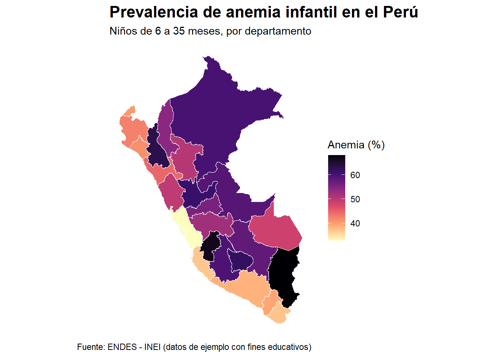

Este proyecto construye un mapa de calor de la prevalencia de anemia infantil (6–35 meses) en el Perú por departamento usando R.
Se combinan dos fuentes:
-Un dataset CSV con prevalencia de anemia (%)
-Un shapefile (límites geográficos) del Perú
1. Carga de librerías
Se cargan los paquetes necesarios para:
-Manipulación de datos (dplyr)
-Lectura de archivos (readr)
-Visualización (ggplot2)
-Manejo geoespacial (sf, terra, geodata)
-Limpieza de texto (stringi)
-Paleta de colores (viridis)
library(sf)
Linking to GEOS 3.14.1, GDAL 3.12.1, PROJ 9.7.1; sf_use_s2() is TRUE
library(terra)
terra 1.9.11
library(geodata)library(dplyr)
Attaching package: 'dplyr'
The following objects are masked from 'package:terra':
intersect, union
The following objects are masked from 'package:stats':
filter, lag
The following objects are masked from 'package:base':
intersect, setdiff, setequal, union
Este dataset contiene:
-departamento: nombre de la región
-anemia_pct: prevalencia (%) de anemia infantil
# Leer datos desde la carpetaanemia <-read_csv("anemia_peru.csv" )
Rows: 25 Columns: 2
── Column specification ────────────────────────────────────────────────────────
Delimiter: ","
chr (1): departamento
dbl (1): anemia_pct
ℹ Use `spec()` to retrieve the full column specification for this data.
ℹ Specify the column types or set `show_col_types = FALSE` to quiet this message.
# Visualizar primeras filas para verificar carga correctahead(anemia)
Los nombres del CSV y del shapefile pueden no coincidir exactamente
(por ejemplo: tildes, mayúsculas, espacios).
Se estandarizan para asegurar una unión correcta.
limpiar_nombre <-function(x) {# Asegurar que la variable sea texto x <-as.character(x)# Eliminar tildes en caso existan x <- stringi::stri_trans_general(x, "Latin-ASCII")# Convertir a mayúsculas x <-toupper(x)# Eliminar espacios al inicio y al final x <-trimws(x)return(x)}# Crear clave limpia en el shapefileperu_sf <- peru_sf %>%mutate(departamento_limpio =limpiar_nombre(NAME_1))# Crear clave limpia en el CSVanemia <- anemia %>%mutate(departamento_limpio =limpiar_nombre(departamento))# Algunos shapefiles separan Lima en "LIMA" y "LIMA PROVINCE".# Para este tutorial departamental, se agrupan bajo la clave "LIMA".peru_sf <- peru_sf %>%mutate(departamento_limpio =ifelse( departamento_limpio =="LIMA PROVINCE","LIMA", departamento_limpio ) )# Validar coincidencias antes del joinsetdiff(peru_sf$departamento_limpio, anemia$departamento_limpio)
Se combinan los datos geográficos con los datos de anemia.
Se usa left_join para:
-Conservar todos los departamentos del mapa
-Añadir la variable de anemia
mapa_anemia <- peru_sf %>%left_join(anemia, by ="departamento_limpio")# Verificar si hay datos faltantesmapa_anemia %>%filter(is.na(anemia_pct)) %>%select(NAME_1)
Simple feature collection with 0 features and 1 field
Bounding box: xmin: NA ymin: NA xmax: NA ymax: NA
Geodetic CRS: WGS 84
[1] NAME_1 geometry
<0 rows> (or 0-length row.names)
6. Creación del mapa de calor
Se construye el mapa usando ggplot2:
geom_sf() → dibuja el mapa
fill = anemia_pct → color según prevalencia
escala de color → intensidad representa mayor anemia
# Objetivo:# Representar espacialmente la prevalencia de anemia infantil (%)# por departamento en el Perú.## Cada departamento se colorea según el valor de 'anemia_pct'.# Valores más altos indican mayor prevalencia de anemia.mapa <-ggplot(data = mapa_anemia) +# Dibujar los polígonos departamentales del Perú.# La estética 'fill = anemia_pct' asigna un color a cada departamento# según su porcentaje de anemia infantil.geom_sf(aes(fill = anemia_pct),color ="white", # color de los bordes entre departamentoslinewidth =0.3# grosor de los bordes ) +# Escala de color secuencial usando la paleta viridis.# 'magma' es una paleta adecuada para variables continuas porque:# - tiene buen contraste visual# - es más accesible para personas con daltonismo# - funciona bien en fondos clarosscale_fill_viridis_c(option ="magma",direction =-1, # invierte la escala para que valores altos sean más intensosname ="Anemia (%)",na.value ="gray90"# color para departamentos sin datos ) +# Títulos y fuente del gráfico.# El título indica qué se está mostrando.# El subtítulo define la población analizada.# El caption documenta la fuente o naturaleza de los datos.labs(title ="Prevalencia de anemia infantil en el Perú",subtitle ="Niños de 6 a 35 meses, por departamento",caption ="Fuente: ENDES - INEI (datos de ejemplo con fines educativos)" ) +# Tema base limpio, adecuado para mapas y reportes.theme_minimal() +# Personalización del diseño visual.theme(# Título principal más visibleplot.title =element_text(size =16,face ="bold" ),# Subtítulo ligeramente más pequeñoplot.subtitle =element_text(size =11 ),# Ubicación de la leyendalegend.position ="right",# Eliminar ejes porque en un mapa departamental no aportan información útilaxis.text =element_blank(),axis.title =element_blank(),axis.ticks =element_blank(),# Eliminar grillas para limpiar la visualizaciónpanel.grid =element_blank(),# Fondo blanco para que se vea mejor en GitHub, reportes y presentacionespanel.background =element_rect(fill ="white",color =NA ),plot.background =element_rect(fill ="white",color =NA ) )# Mostrar el mapa en el visor de RStudio o en el documento Quartomapa

7. Exportación del resultado
Se guarda el mapa como imagen para su uso en reportes o GitHub.
# Se guarda el mapa en alta resolución dentro de la carpeta output/.# Esta imagen puede usarse en el README de GitHub, reportes o presentaciones.if (!dir.exists("output")) {dir.create("output")}ggsave(filename ="output/mapa_anemia_peru.png",plot = mapa,width =9,height =10,dpi =300,bg ="white")
Conclusión
Este flujo permite:
-Integrar datos de salud pública con información geográfica
-Visualizar desigualdades regionales
-Generar productos reproducibles en R
El mismo enfoque puede aplicarse a otros indicadores como: